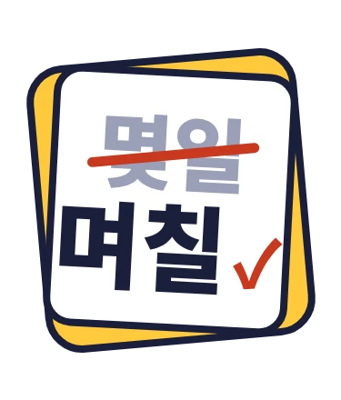

맞춤법 능력고사
며칠? 몇일? 되? 돼?
12문제로 확인하는 내 맞춤법 실력
✅ 총 12문항 · 예상 소요시간 약 2분
✅ 52문항 중 12개를 뽑아 풀 때마다 문제가 달라져요
✅ 고르는 즉시 정답과 이유를 알려 드려요
✅ 결과 화면에서 틀린 문제만 모아 다시 볼 수 있어요
📖 맞춤법, 왜 아는 것도 틀릴까
말로 할 때는 한 번도 막힌 적이 없는데, 적으려고 하면 손이 멈추는 말이 있어요. '며칠'과 '몇일', '되'와 '돼' 같은 것들입니다. 이런 말은 소리가 같거나 거의 같아서 귀로는 구별이 안 되고, 적는 법은 따로 알아야 하거든요. 이 퀴즈는 일상에서 가장 자주 틀리는 표기 52개를 모아, 그중 12개를 뽑아 내는 시험이에요.
규칙만 알면 안 틀리는 것들
외워야 하는 말도 있지만, 아래 다섯 가지는 원리 하나로 정리돼요.
- 되 / 돼 — '돼'는 '되어'의 준말이에요. 그 자리에 '해'를 넣어 말이 되면 '돼', '하'를 넣어 말이 되면 '되'입니다. "안 해"가 자연스러우니 "안 돼", "하면"이 자연스러우니 "되면".
- 안 / 않 — '안'은 '아니', '않'은 '아니하'의 준말이에요. "안 먹어"처럼 뒷말을 꾸미면 '안', "먹지 않아"처럼 '-지' 뒤에 오면 '않'입니다.
- 로서 / 로써 — 자격이나 신분은 '로서'(친구로서), 수단이나 도구는 '로써'(대화로써)예요.
- 든지 / 던지 — 둘 중에서 고를 때는 '-든지'(가든지 말든지), 지난 일을 떠올릴 때는 '-던지'(얼마나 춥던지)예요.
- -대 / -데 — 남에게 들은 말을 전할 때는 '-대'(걔 온대), 내가 직접 겪은 일을 말할 때는 '-데'(가 보니 좋데)예요.
뜻이 달라서 구별해야 하는 짝
소리는 비슷하지만 아예 다른 낱말인 경우도 많아요. 이런 말은 대표 문장 하나를 기억해 두면 편합니다.
- 맞히다 / 맞추다 — 정답은 '맞히고', 답안지는 서로 '맞춰' 봅니다.
- 부치다 / 붙이다 — 편지는 '부치고', 우표는 '붙입니다'.
- 메다 / 매다 — 가방은 어깨에 '메고', 신발 끈은 '맵니다'.
- 들르다 / 들리다 — 편의점에는 '들르고', 노랫소리는 '들립니다'.
- 결제 / 결재 — 카드로 '결제'하고, 부장님께 '결재'를 받습니다.
소리대로 적으면 틀리는 말
'눈곱'은 [눈꼽]으로, '할게'는 [할께]로 소리 나요. 그래서 들리는 대로 적으면 틀립니다. 반대로 '널따랗다'처럼 원래 말('넓다')과 다르게 소리대로 적는 말도 있어서 더 헷갈리죠. 이런 표기는 규칙보다 눈에 익히는 것이 빠릅니다. 이 퀴즈가 고른 뒤에 바로 이유를 보여 주는 것도 그래서예요.
결과를 이렇게 읽어보세요
둘 중 하나를 고르는 문제라서 아무렇게나 찍어도 평균 6개쯤은 맞아요. 그러니 10개 이상 맞혔다면 감이 아니라 실력으로 가려낸 것으로 봐도 좋습니다. 점수가 낮게 나왔다면 결과 화면의 '틀린 문제 다시 보기'를 한 번 읽고 다시 풀어 보세요. 문제가 매번 바뀌어서, 두세 번만 풀어도 자주 쓰는 표기는 거의 다 만나게 됩니다.
자주 묻는 질문
'짜장면'과 '자장면'처럼 둘 다 맞는 말도 나오나요?
아니요. 짜장면/자장면, 맨날/만날, 이쁘다/예쁘다처럼 둘 다 표준어로 인정된 말은 문제에서 뺐어요. 한쪽만 맞는 표기만 냅니다.
정답의 기준은 무엇인가요?
한글 맞춤법과 표준어 규정, 그리고 표준국어대사전에 실린 표기를 기준으로 했어요. 표준어는 시대에 따라 추가되기도 하니, 문항에 고칠 점이 보이면 문의 페이지로 알려 주세요.
띄어쓰기 문제는 없나요?
이번 시험은 낱말 표기만 다뤄요. 띄어쓰기는 허용되는 경우가 많아 둘 중 하나로 가르기 어려운 문제가 많기 때문입니다.
✏️ 표기는 표준국어대사전을 기준으로 했어요. 재미로 풀어 보는 퀴즈이며 공인 시험이 아닙니다.